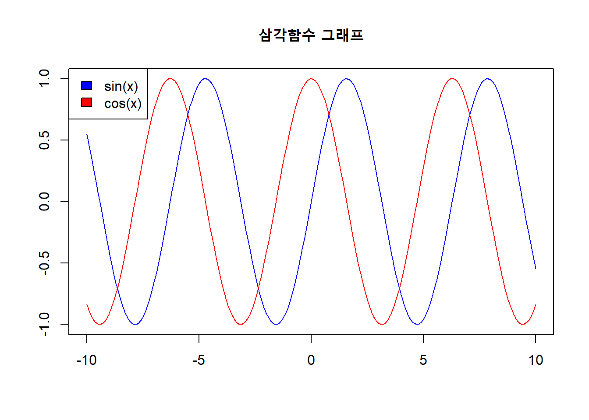
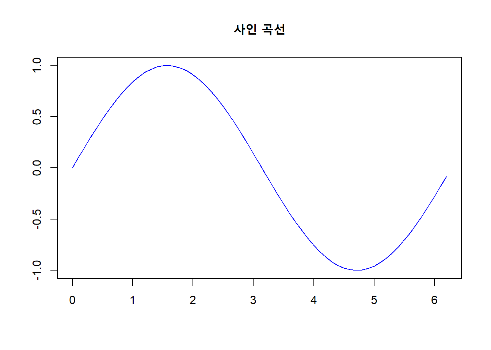

5.1 R 수학 함수
5.1.2 ceiling()
ceiling(x)는 x보다 큰 수 중 가장 작은 정수를 반환합니다.
5.1.5 round()
‘round(x, digits = n)’는 x를 소수점 n+1 자리에서 반올림하여 소수점 n번째 자리까지 반환합니다. 만일 digits의 값이 음수이면 10n-1 자리에서 반올림하여 0을 10n 자리까지 만들어 반환합니다. digits 인자의 기본값은 0입니다.
R의 반올림 함수는 국제표준(IEEE 754:2008, ISO/IEC/IEEE 60559:2011)을 따르고 있습니다. 따라서 Excel의 반올림 함수와는 다른 결과 값을 보여줍니다. 예를 들면 Excel에서 =round(2.5, 0)을 하면 3이 나오지만, R에서는 round(2.5, digits = 0)을 하게 되면 2가 나오게 됩니다.
이는 위 부동소숫점 실수와 관련된 국제표준에서 반올림의 모드로 제시된 5가지 방법 중 짝수로 반올림(round to nearest, ties to even)를 기본모드로 선택하였기 때문입니다. ’짝수로 반올림’ 모드는 ‘은행원의 반올림’, ’오사오입’이라고도 불리우는 방법으로 반올림으로 인한 오류의 기대값을 0으로 하는 효과가 있습니다. 이 방법은 가장 가까운 표현 가능한 숫자로 반올림하되, 원래 값이 가능한 숫자 두 개의 중간에 걸쳐 있으면 둘 중 가수부의 마지막 자리가 짝수인 값으로 반올림합니다. 예를 들면 52.5는 52, 51.5는 52로 반올림합니다.
5.1.6 signif()
signif(x, digits = n)는 지정한 유효숫자(significant digits)인 n만큼 자리수를 만들어 반올림 합니다. digits 인자의 기본값은 6입니다. 숫자들의 열을 깔끔하게 맞추고자 할 때 많이 사용합니다.
5.1.8 로그함수
log(x)는 밑이 e인 x의 자연로그값을 반환합니다.log10(x)은 밑이 10인 x의 상용로그값을 반환합니다.log2(x)는 밑이 2인 x의 이진로그값을 반환합니다.log(x, base)밑이 base인 x의 로그값을 반환합니다.log1p(x)는 밑이 e인 x+1의 자연로그값을 반환합니다.
5.1.9 exp()
exp(x)는 상수 e를 x만큼 제곱한 값을 반환합니다.expm1(x)는 상수 e를 x만큼 제곱한 값에서 1을 뺀 값을 반환합니다.
5.1.10 삼각함수
cos(x)는 x 라디안 각도의 코사인 값을 반환한다.sin(x)는 x 라디안 각도의 사인 값을 반환한다.tan(x)는 x 라디안 각도의 탄젠트 값을 반환한다.acos(x),asin(x),atan(x),atan2(x)는 역삼각함수입니다.cospi(x),sinpi(x),tanpi(x)는pi*x의 삼각함수입니다. 입력이 pi의 배수일 때 정밀한 계산을 위해 사용합니다.
# 사인 곡선 (Sign Curve)
x <- seq(-10, 10, 0.1)
plot(x, sin(x), type = "l", col = "blue",
ylab = "", xlab = "", main = "삼각함수 그래프")
lines(x, cos(x), type = "l", col = "red")
legend("topleft", c("sin(x)", "cos(x)"), fill=c("blue", "red"))
# 삼각함수 그래프
x <- seq(0, 2*pi, 0.1)
plot(x, sin(x), type = "l", col = "blue",
ylab = "", xlab = "", main = "사인 곡선")
5.1.11 누적함수
cumsum(x)x 벡터의 누적 합 벡터를 반환합니다.cumprod(x)x 벡터의 누적 곱 벡터를 반환합니다.cummax(x)x 벡터의 누적 최대값 벡터를 반환합니다.cummin(x)x 벡터의 누적 최소값 벡터를 반환합니다.
5.1.12 sum()
sum(x, na.rm = FALSE)는 x벡터의 합계를 반환합니다.
5.1.13 diff()
diff(x, lag = 1, differences = 1)는 두 수의 차이값을 반환합니다. lag 인수는 두 수의 간격을 나타냅니다. lag = 2이면 두 칸 간격의 두 수 차이입니다. differences 인수는 차분의 차수입니다. differences = 2이면 차분을 두번한 값을 반환합니다.
5.1.14 prod()
prod(x, na.rm = FALSE)는 x 벡터의 곱을 반환합니다.
5.1.15 gamma(), factorial()
감마함수(gamma function)는 오일러(Leonhard Euler)가 정수만 적용되는 n!을 실수로 확장하기 위해 제안한 함수입니다.
gamma(x)는 x-1의 계승값을 반환합니다. 즉 gamma(x)는 factorial(x-1)과 동일합니다.factorial(x)는 x의 계승값을 반환합니다.
# lfactorial()은 factorial()의 결과값에 자연로그를 적용하는 함수
lfactorial(5)
#> [1] 4.79
log(factorial(5))
#> [1] 4.79
lgamma(5+1)
#> [1] 4.79gamma() 함수와 연관된 함수는 lgamma() 외에도 psigamma(x, deriv = 0), digamma(x), trigamma(x)가 있습니다.
5.1.16 beta()
베타함수는 감마함수를 만든 오일러가 만든 함수입니다. 감마보다 먼저 만들어진 함수라서 알파, 베타, 감마의 순서에 따라 베타함수로 이름이 지어졌습니다. 베타함수는 이항계수의 일반화라고 할 수 있습니다.
5.1.17 choose()
choose(n, k)는 n개에서 순서에 상관없이 k개를 뽑는 경우의 수를 반환합니다.
수식은 \(n!/(n-k)!k!\) 입니다.
5.1.18 복소수 함수
R에서는 복소수 관련 연산이나 함수를 지원합니다.
Re(x)는 복소수 x의 실수(Real) 부분을 반환합니다.Im(x)는 복소수 x의 허수(Imaginary) 부분을 반환합니다.Mod(x)는 복소수 x의 절대값(modulus)을 반환합니다.Arg(x)는 복소수 x의 편각(argument)을 반환합니다.Conj(x)는 복소수 x의 공액 복소수(허수부의 부호만 바뀐 복소수)를 반환합니다.
5.1.19 집합 함수
union(x, y)는 x와 y의 합집합을 반환합니다.intersect(x, y)는 x와 y의 교집합을 반환합니다.setdiff(x, y)는 x에 있고 y에는 없는 (x-y)차집합을 반환합니다.setequal(x, y)는 x와 y가 같은지 비교검사 결과를 반환합니다.is.element(el, set)는 el에 있는 각 원소들이 set집합에 포함되는지를 검사합니다.x %in% y와 동일합니다.
set.seed(123)
(x <- c(sort(sample(1:20, 9)), NA))
#> [1] 2 3 5 6 10 11 14 15 19 NA
(y <- c(sort(sample(3:23, 7)), NA))
#> [1] 5 7 10 11 12 16 22 NA
union(x, y) # 합집합
#> [1] 2 3 5 6 10 11 14 15 19 NA 7 12 16 22
intersect(x, y) # 교집합
#> [1] 5 10 11 NA
setdiff(x, y) # 차집합(x-y)
#> [1] 2 3 6 14 15 19
setdiff(y, x) # 차집합(y-x)
#> [1] 7 12 16 22
setequal(x, y) # 비교
#> [1] FALSE
is.element(x, y)
#> [1] FALSE FALSE TRUE FALSE TRUE TRUE FALSE FALSE FALSE TRUE
x %in% y # is.element(x, y)와 동일
#> [1] FALSE FALSE TRUE FALSE TRUE TRUE FALSE FALSE FALSE TRUE
all(is.element(x, y)) # x가 y에 모두 포함되어 있으면 TRUE
#> [1] FALSE5.1.20 푸리에 함수
fft(x, inverse = FALSE)는 x의 고속 푸리에 변환 값을 반환합니다.mvfft(x, inverse = FALSE)는 행렬 x의 각 열의 고속 푸리에 변환 값을 반환합니다.filter(x, filter)는 시계열에 선형 필터를 적용합니다.convolve(x, y)
(x <- matrix(c(1, 2, 3, 2, 20, 26, 3, 26, 38), nrow = 3))
#> [,1] [,2] [,3]
#> [1,] 1 2 3
#> [2,] 2 20 26
#> [3,] 3 26 38
fft(x)
#> [,1] [,2] [,3]
#> [1,] 121.0+ 0.0i -51.5+16.5i -51.5-16.5i
#> [2,] -51.5+16.5i 19.0-13.9i 28.0- 0.0i
#> [3,] -51.5-16.5i 28.0+ 0.0i 19.0+13.9i
mvfft(x)
#> [,1] [,2] [,3]
#> [1,] 6.0+0.00i 48+0.0i 67+ 0.0i
#> [2,] -1.5+0.87i -21+5.2i -29+10.4i
#> [3,] -1.5-0.87i -21-5.2i -29-10.4i5.1.21 수치해석 함수
- polyroot 근구하기
- uniroot
- D 미분
- integrate 적분